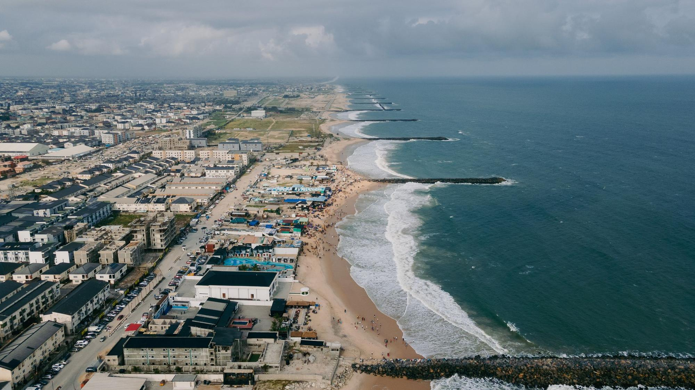

—Featured
Delivery units that deliver: lessons for reform-minded governments
Centres of government everywhere have tried delivery units. What separates those that change outcomes from those that only produce dashboards?
Full note to follow
—Insights
Perspectives on reform, reputation and investment across Africa: the kind of thinking we bring to every engagement.
Topics
—Featured
Centres of government everywhere have tried delivery units. What separates those that change outcomes from those that only produce dashboards?
Full note to follow
Showing 8 notes



If a note here touches on something you are working through, we would be glad to continue the conversation.
Start a conversation